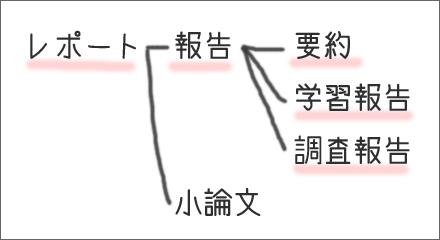

報告とは何か
報告の種類
報告には、次のような種類がある。
- 要約（ようやく）
- ある文章を読んで、その文章のポイントを自分のことばで短くまとめる
- 学習報告（がくしゅうほうこく）
- あるテーマに関して、資料を調べたり、学習したりした内容をまとめる
- 調査報告（ちょうさほうこく）
- 実験結果や調査内容、具体的な事実関係や観察した事柄などをまとめる

要約
要約は、書籍や論文などの文章を読んで、その文章を短くまとめるものである。要約では、文章のポイントが押さえられていることだけでなく、自分のことばでまとめられていることも重要である。それによって、要約した人が、もとの文章をどのように理解したのかがわかるからである。【参考→「文章の要約」】。
なお、要約に、書き手の評価を加えたものは「書評」と呼ばれる。書評は、単なる読書感想文ではなく、文章を適切に要約したうえで、その内容を分析し、書き手の評価を述べるものである。
学習報告
学習報告は、課題として設定されたテーマに関して、文献・資料で調べた内容や、授業・講義で学んだ事柄をまとめるものである。
学習報告では、自分で実験やアンケート調査を行なったり、分析や考察を加えたりする必要はない。
調査報告
調査報告は、自分で調査を行ない、その内容や結果をまとめるものである。
ここでいう「調査」には、実験やアンケート調査、詳細な文献調査、観察などの方法がある。それらを客観的に分析したうえで報告としてまとめるのである。
報告の条件
要約であれ、学習報告であれ、調査報告であれ、報告で最も重要なことは、記述した事実やデータが正確だということである。
具体的には、次の３つの条件が守られていなければならない。
- 事実の認定やデータに誤りがない
⇒《ただしく書く》
- 事実の記述が公正である
⇒《はっきり書く》
- 事実やデータが恣意的に選択されていない
⇒《すべてを書く》
よい報告と悪い報告
古郡（2006：12）は、次のように述べている。
文章には、大まかにいって、二つの種類があります。「うまい−へた」によって評価される文章と、「よい−悪い」によって評価される文章です。小説や詩歌は前者に属します。実用文、マニュアル、レポート、論文などは後者に属します。
つまり、報告は、「よい−悪い」によって評価される文章
である。報告が『よい』か『悪い』かの基準は、まず何よりも「報告の条件」が守られているかどうかである。「報告の条件」が守られていないものは、それだけで悪い報告と評価されるであろう。
悪い報告の例
「報告の条件」が守られていないものは悪い報告である。つまり、次のような報告は悪い報告だといえる。
- 事実の認定に誤りのある記述や誤ったデータが含まれている
- 公正でない記述が含まれている
- 事実が恣意的に選択された記述や恣意的に選択されたデータが含まれている
このように不適切な記述やデータが含まれた報告は、悪い報告である。以下に、不適切な記述の具体例を示しておく。
事実に誤りのある記述
たとえば、次のような出来事を記述する場合を考てみよう。
- 学生が先生を蹴った
- 蹴られた先生がケガをした
このとき、
先生が学生を蹴って、学生がケガをした。
というのは、事実に誤りのある記述である。先生が加害者で、学生が被害者だというのは、出来事の最も重要なポイントであり、誤りは許されない。
公正でない記述
たとえば、次のような出来事を記述する場合を考てみよう。
- 学生が先生を蹴った
- 蹴られた先生がケガをした
このとき、
学生の足が先生に当って、先生がケガをした。
というのは、公正でない記述である。内容自体には、事実に反するところはないが、これでは『学生が先生を蹴った』のかどうかがわからない（あるいは、故意に隠されている）。結果として、誤った情報を与える可能性が高いため、公正だとはいえないのである。
事実が恣意的に選択された記述
たとえば、次のような出来事を記述する場合を考てみよう。
- 学生が先生を蹴った
- 蹴られた先生がケガをした
このとき、
学生が先生を蹴った。
というのは、事実が恣意的に選択された記述である。これも、内容自体には事実に反するところはないが、これでは『蹴られた先生がケガをした』ことがわからない（あるいは、故意に隠されている）。
同じく、
先生がケガをした。
というのも、事実が恣意的に選択された記述である。これでは『学生が先生を蹴った』ことがわからない（あるいは、故意に隠されている）。
このように恣意的な選択をすることによって、重要な情報が伝達されないままになってしまうのである。
不正な記述
「事実に誤りのある記述」・「公正でない記述」・「事実が恣意的に選択された記述」が意図的になされるならば、それは不正な記述といえる。
次のような記述は不正なものである。このような記述は、けっして報告に含まれてはならない。
- 内容にウソや事実の誇張がある記述
- 相手を誤解させようと意図する記述
- 不都合な事実やデータを隠 そうとする記述